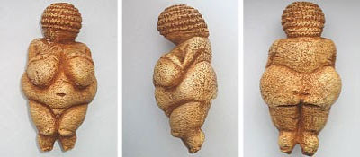

Arte na Pré-História
A arte na Pré-História foi produzida, principalmente, durante os períodos Paleolítico e Neolítico. Destacam-se as pinturas rupestres e as construções megalíticas.
Quando se fala em arte na Pré-História, estamos falando da produção vista como artística na Pré-História, isto é, durante os períodos Paleolítico, Neolítico e Idade dos Metais. Em geral, compreende pinturas realizadas em cavernas, gravuras esculpidas em rochas, esculturas, estatuetas etc.
Para facilitar sua compreensão a respeito do assunto, é importante considerarmos que os três períodos citados e que são considerados como parte da Pré-História são:
Paleolítico: período que compreende de 2.5 milhões de anos atrás a 10.000 a.C.
Neolítico: período que se estende de 10.000 a.C. até 5.000 a.C.
Idade dos Metais: período que se estende de 5.000 a 3.500 a.C.
Outra observação importante é que as extensões de cada período em todo o planeta são bastante distintas. Neste texto, optamos por colocar a datação clássica, mas os avanços e desenvolvimentos no estilo de vida humana foram distintos nos diferentes locais do planeta. Sendo assim, houve locais em que o avanço que caracterizou as diferenças de uma era para outra foi bastante rápido e outros em que os avanços foram lentos.
A arte na Pré-História manifestou-se de diferentes formas. A intenção dessas obras é alvo de grande debate pelos especialistas. As motivações mais comumente mencionadas são que as populações pré-históricas faziam esses registros como forma de:
- Registrar o cotidiano apenas por registrar. Nesse caso, o registro artístico seria no sentido “a arte pela arte”.
- Registrar com fins ritualísticos de criar uma conexão do homem com a natureza.
Arte no Período Paleolítico
No caso do Paleolítico, o grande destaque são as pinturas rupestres, que são as gravuras desenhadas nas paredes de cavernas. Os especialistas acreditam que as pinturas rupestres tenham surgido aproximadamente há 40 mil anos em grupos humanos que já possuíam domínio do fogo e tinham acesso a ferramentas produzidas por meio da lascagem de pedra. Essa arte, em geral, mostra o homem em meio a grandes grupos de animais, representando, principalmente, cenas de caçadas, mas também retrata outras cenas do cotidiano humano.
Os especialistas falam que a arte rupestre utilizava materiais como terra, carvão, sangue, flores etc. Os principais exemplos dessa arte são encontrados na Caverna de Chauvet e Lascaux, na França, mas também estão em outros locais, como Espanha, Austrália, Argentina etc. Aqui no Brasil o grande centro de arte rupestre fica na Serra da Capivara, localizada no Piauí.
Não há registro somente de arte rupestre no Paleolítico, pois existem também pequenas esculturas que foram produzidas nesse período. Nesse caso, o grande destaque são as estatuetas de Vênus, produzidas entre 40.000 a.C. e 10.000 a.C. Essas estatuetas conhecidas como Vênus reproduzem sempre um corpo feminino nu com formas bastante voluptuosas, destacando-se os seios grandes e os quadris largos.
Essas esculturas são entendidas pelos especialistas como um registro relacionado com um culto à fertilidade, o qual pode estar associado como uma divindade conhecida como Deusa Mãe. A estatueta Vênus mais conhecida é a Vênus de Willendorf, localizada na Áustria e que tem aproximadamente 25 mil anos de existência.
Arte no Período Neolítico
O período Neolítico apresenta grandes transformações e avanços em relação ao Paleolítico – embora de modo não uniforme. Esses avanços podem ser destacados, principalmente, pela sedentarização do homem por meio do domínio das técnicas agrícolas e da domesticação dos animais.
Isso permitiu que o homem desenvolvesse novas ferramentas, que trouxeram melhoria para a sua vida. Um dos grandes avanços do Neolítico está relacionado com as construções, uma vez que pouco a pouco o homem foi desenvolvendo habilidades arquitetônicas.
Esses avanços refletiram-se diretamente na construção dos monumentos megalíticos, isto é, enormes complexos feitos por um amontoado de grandes rochas. Esses monumentos são encontrados em diferentes partes do mundo e estão diretamente relacionados com a necessidade do homem de criar registros em homenagem aos seus antepassados. Podem também ter relação com a marcação do tempo ou com a observação dos astros.
As estruturas megalíticas mais conhecidas são Stonehenge, na Inglaterra, e o Cromeleque dos Almendres, localizado em Portugal. Apesar disso, já foram localizadas estruturas do tipo em diferentes locais, como Irlanda, Itália, Egito, Turquia etc.
Arte na Pré-História do Brasil
No caso do Brasil, existem algumas produções de arte pré-histórica localizadas em alguns estados, como Piauí, Paraíba, Mato Grosso e Santa Catarina. O grande destaque são as pinturas rupestres encontradas na Serra da Capivara, no estado do Piauí, que abriga mais de 100 pinturas rupestres que retratam cenas de caça, guerra, sexo etc.